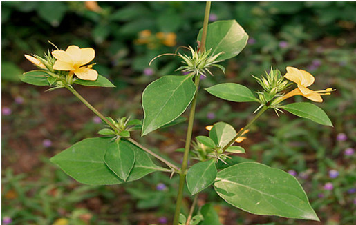

Basonym of Drug
Saireyaka
Main Synonym
- Amalatan
- Dasi
- Bhana
- Kurantaka
- Sahachar
- Mrudukantaka
- Kinkirataka
- Jhinti
Regional Name
- Bengali: Kantajati, Janti
- Gujarati: Katasairiyo
- Hindi: Katsareya
- Kannada: Gorantige
- Tamil: Shemmuli
- Telugu: Mullu Goranti
- English: Yellow Nail-Dye Paint
Botanical Name
Barleria prionitis Linn
Family
External Morphology
Small shrub with small spikes
Useful Parts
Important Phytoconstituent
- Potassium
- Rhamnosyl
- Acetyl Barlerin
- Iridoids
Rasa Panchak
- Rasa: Tikta, Madhura
- Guna: Laghu
- Virya: Ushna
- Vipaka: Katu
Action
Therapeutic Indication
- Sothahara (Anti-inflammatory)
- Shoolahara (Analgesic)
- Kusthaghna
- Netrarogahara (Treat Skin Diseases)
- Palitiyahara (Prevents Premature Hair Graying)
Therapeutic Uses
- Sandhivata: Oil prepared with saireyaka is useful to treat inflammation and pain in arthritis.
- Arma: Powder of saireyaka, lodhra, and haridra is sprinkled in the eye after surgery of pterygium.
- Karnashoola: Root paste is applied over the swelling of glandular nodes and boils.
Dose
- Juice - 10-20 ml
- Decoction - 40-80 ml
Formulations
- Sahacharadi Taila
- Saptasara Kashaya
- Rasnadi Kwath
Adverse Effect
Not Known